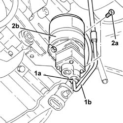

2127C30 hydraulic speed selection system pump - r r
- Path
- Procedures > 21 GEARBOX UNIT > 2127 ELECTRO-HYDRAULIC SELECTION. GEARBOX EXTERNAL. CONTROLS > 2127C hydraulic gear selection system > 2127C30 hydraulic speed selection system pump - r r
- Kind
- repair procedure (removal / refitting; the operation number is the code)
- Applies to
- engines: 1.2 8v; all production periods
- Interactive page
- https://sloeber94.github.io/elrnDB-fPnd/en/#/2752680
Applies to: engines: 1.2 8v; all production periods
 Removing
Removing
 Refitting
Refitting5530B56 BATTERY DRIP TRAY COVER - R.R.
5530B52 Battery DRIP TRAY/SUPPORT - R.R.
2127C12 hydraulic gear selection fluid reservoir - r r
1. Undo the connector (1a) and disconnect the high-pressure pipe (1b), pump side.
2. Undo the fixing bolts (2a) and remove the electrohydraulic gear selection system pump (2b) complete with O-ring.

Applies to: engines: 1.2 8v; all production periods
Refitting
RemovingPlace the electrohydraulic gear selection system pump in its seating and secure it with the bolts.
Connect the high-pressure supply pipe to the pump and secure it with the connector.
2127C12 hydraulic gear selection fluid reservoir - r r
0010T21 coolant check density and top up if necessary
0010T48 hydraulic system for gearbox with hydraulic selection bleed air
5530B52 Battery DRIP TRAY/SUPPORT - R.R.
Topics linked from this page (7)
- 0010T21 coolant check density and top up if necessary
- 0010T47 hydraulic system fluid for gearbox with hydraulic selection check level and top up if necessary
- 0010T48 hydraulic system for gearbox with hydraulic selection bleed air
- 2127C12 hydraulic gear selection fluid reservoir - r r
- 5530B10 battery - r+r
- 5530B52 Battery DRIP TRAY/SUPPORT - R.R.
- 5530B56 BATTERY DRIP TRAY COVER - R.R.